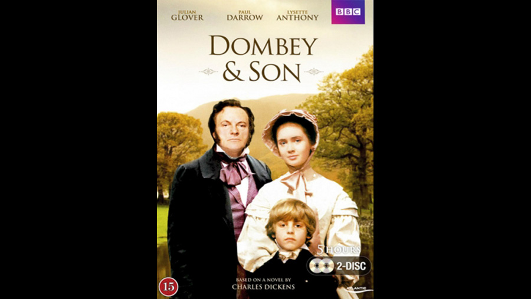

| Character | Actor |
|---|---|
| Paul Dombey Snr. | Julian Glover |
| Fanny Dombey | Patricia Donovan |
| Young Florence | Romyanna Wood |
| Midwife | Lala Lloyd |
| Dr. Parker Peps | Paul Imbusch |
| Louisa Chick | Rhoda Lewis |
| Lucretia Tox | Shirley Cain |
| Mr. Chick | Ivor Roberts |
| Towlinson | Kenton Moore |
| Polly Toodle (Richards) | Jenny McCracken |
| Rob Toodle | Anthony Dutton |
| Jemima | Hetty Baynes |
| Biler (as a boy) | Bradley Hardiman |
| Susan Nipper | Zelah Clarke |
| Mr. Perch | Ronald Herdman |
| James Carker | Paul Darrow |
| Walter Gay (as a boy) | Finn Fordham |
| Solomon Gills | Roger Milner |
| Captain Cuttle | Emrys James |
| Old Mother Brown | Phillada Sewell |
| Mr. Clark | Gordon Salkilld |
| Paul Dombey Jnr. | Barnaby Buik |
| Florence Dombey | Lysette Anthony |
| Walter Gay | Max Gold |
| Mrs. Pipchin | Barbara Hicks |
| Berinthia | Theresa Watson |
| Major Bagstock | James Cossins |
| Bitherstone | Justin Salmon |
| Mr. Brogley, broker | John Quarmby |
| Mr. Toots | Neal Swettenham |
| The Hon. Mrs. Skewton | Diana King |
| Edith Granger (later Dombey) | Sharon Maughan |
| Withers | Andrew Dunford |
| Biler (as a youth) | Steve Fletcher |
| Lord Feenix | Roger Ostime |
| Stable Lad | John Tramper |
| Mrs. Parker Peps | Nancy Mansfield |
| Youth | David Squire |
| Role | Person |
|---|---|
| Director | Rodney Bennett |
| Screenplay | James Andrew Hall |
| Music | Dudley Simpson |